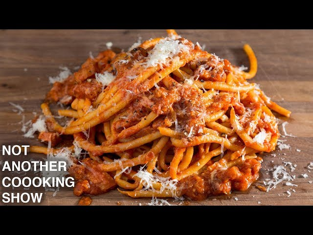

Pasta Amatriciana

About the Dish
Pasta Amatriciana is one of the 4 classic Roman pasta dishes. Before tomatoes were introduced to Italy, chefs relied on animal fats and cheeses to make their sauces. One of those dishes is called Pasta alla Gricia, which is the basis for Pasta Amatriciana. The only difference between the two is Amatriciana was developed after the introduction of tomatoes to Italy. Pasta Amatriciana is essentially a tomato sauce cooked in pork fat (guanciale) seasoned with black pepper and pecorino romano cheese.
I do not have much personal history with this dish. It is a dish that I found around the same time I found Aglio e Olio, which means that the version I made was by NOT ANOTHER COOKING SHOW. I thoroughly enjoyed it, though I had to substitute guanciale with a less expensive/more available option in pancetta. If pancetta is too expensive or hard to come by, smoked streaky bacon will work just fine.
With all of that being said, let's get cookin'!
List of Ingredients
- 450g of Bucatini (any pasta will work really)
- 340g of Guanciale/Pancetta/Bacon, cut into uniform slices
- 1 Cup of Pecorino Romano cheese
- 1 24oz (680g) Can of Whole Peeled San Marzano Tomatoes
- Fresh cracked Black Pepper
- Salt for the pasta water
Steps
- Get a large pot of water on the stove and set to boil.
- Grate the cheese and put it to the side so it's ready to go.
- If the outside of whichever meat you're using is dried, cut off only the dry part(mainly for guanciale).
- If you prefer a smooth-textured sauce, puree the tomatoes (food mill is best). If you want the authentic texture, crush tomatoes by hand
- Throw whichever meat you are using into a cold pan and then set to medium heat, slowly rendering out the pork fat and browning the meat.
- Once the meat is browned and the fat is rendered, throw the fresh cracked black pepper into the fat to bloom for 1 minute.
- Next, add the tomatoes and mix well. Let simmer until it reduces and thickens to preference.
- Now add the pasta to the boiling water and cook 2-3 minutes less than the packaging instructs.
- Once it gets within 2-3 minutes of al-dente, add the pasta to the sauce in the pan to finish cooking the pasta.
- After the pasta is coated in the sauce and is cooked to your liking, add the cheese and mix one last time.
- Serve with more cheese and extra black pepper if you desire. Enjoy!